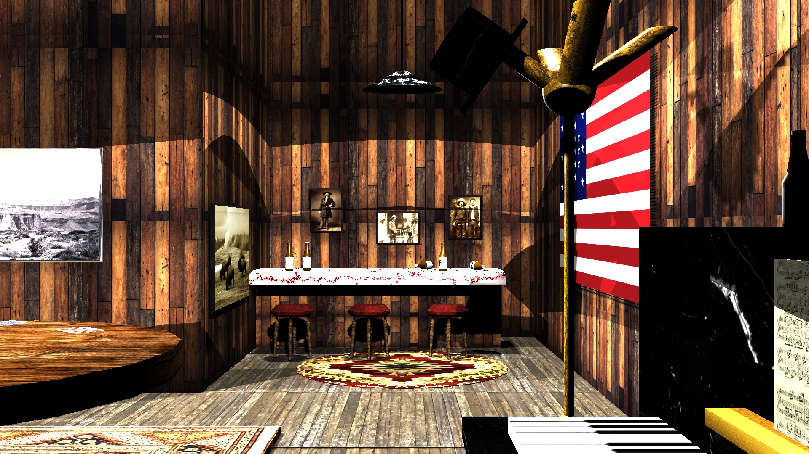

3D Environment Created in Maya (Reel)God's Lonely Man (PS)Don't Let Me Leave (PS)Fanta Shootout ft. The Dude (PS)Let Justice Be Done (PS)No Crook (PS)Can't Break the Mold (PS)A Terrible Fate (PS)Better to Burn Out Than Fade Away (PS)Rockhammer (PS)He Zlimed Me (PS)Notebook Harvey (PS)Homer's Delight (Maya)Tiny Discs (Illustrator)The Four Horsemen (Illustrator)Volcanic Illumination (Maya)Lettuce & Tomato (PS)Late Night (PS)
Highest Grossing Movies in the U.S. (1977-2024)James Bond - Box Office PerformanceTater the goldendoodle peeking out at the cold morningAn on-set photo of a video shoot featuring puppets at the Seawolves stadiumSome southern California mountainsThe snowy, wintertime roads around BehrendThe waters surrounding Catalina Island
Images Sources:
Frame From “Taxi Driver” (1976), dir. Martin Scorsese, Columbia Pictures
Photo of Matthew Broderick, Mia Sara, and Alan Ruck; Behind-The-Scenes Cast Photo from “Ferris Bueller's Day Off” (1986), dir. John Hughes, Paramount Pictures